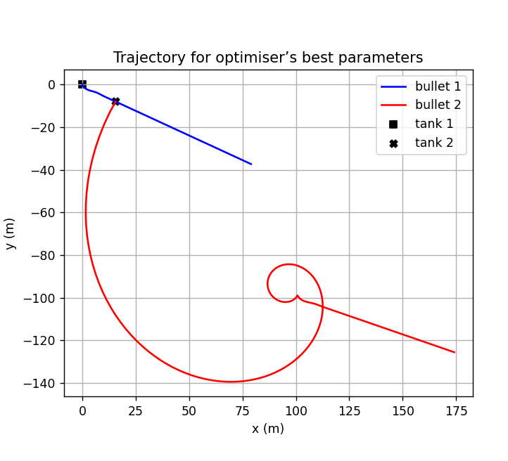
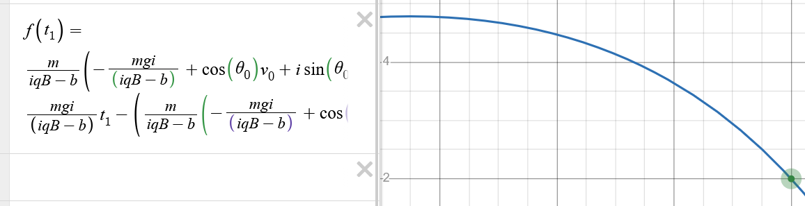

Charged Particle Simulator
Charged-particle dynamics simulator with trajectory optimization

Overview
My physics teacher ran a lab every year where two "tanks" fire particles at each other and you have to figure out the right speed and angle to hit the other tank. I wanted to see how far I could take that problem. I kept adding variables — magnetic force, electric force between the particles — until it wasn't possible to solve with the math techniques I knew. The question became: can I still solve it anyway?
How it works
I started by experimenting in Desmos, trying to get an intuition for how the system behaved as I added more forces. This helped me understand the dynamics before writing any code, and made it clear pretty quickly that a closed-form solution wasn't going to happen.

The simulation models two charged particles that exert electrostatic forces on each other as they travel. At each time step, the forces are recalculated and the positions updated. To find the optimal firing conditions, I used differential evolution — a search algorithm that maintains a population of candidate solutions, combines and mutates them, and converges on the best one without needing gradient information.
The optimizer could target different objectives: make your particle hit the other tank, make the two particles collide, or cause the opponent's particle to curve back and hit its own tank by flying your particle close enough to deflect it with electrostatic force.
Results
The optimizer worked, but got slow as the problems grew more complex. I implemented multithreading and Numba to speed things up. Multithreading lets multiple candidate solutions evaluate in parallel across CPU cores, and Numba compiles Python down to machine code at runtime, avoiding interpreter overhead. These made a big difference for the larger optimization targets.
If I were to revisit this, I think differential evolution could be swapped out for something better. The system's behavior is well-defined enough that a more informed optimizer could likely outperform a general-purpose one. I haven't done much research into what that would be yet.
Tools & Technologies
Python